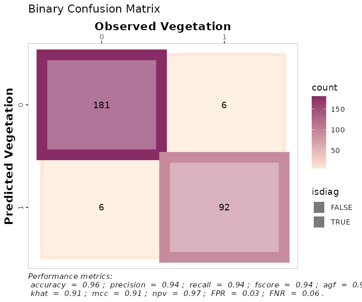
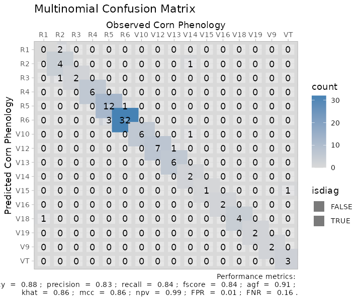

Classification case: Assessing the performance of remote sensing models
Luciana Nieto & Adrian Correndo
2022-11-04
Source:vignettes/classification_case.Rmd
classification_case.Rmd1. Introduction

The metrica package was developed to visualize and compute the level of agreement between observed ground-truth values and model-derived (e.g., mechanistic or empirical) predicted.
This package is intended to fit into the following workflow:
- a data set containing the observed values is used to train a model
- the trained model is used to generate predicted
- a data frame containing at least the observed and model-predicted values is created
-
metricapackage is used to compute and evaluate the classification model based on observed and predicted values
-
metricapackage is used to visualize model fit and selected fit metrics
This vignette introduces the functionality of the metrica package applied to observed and model-predicted values of a binary land cover classification scenario, where the two classes are vegetation (1) and non-vegetation (0)).
Let’s begin by loading the packages needed.
## Libraries
2. Example datasets
2.1. Kansas Land Cover data

Now we load the binary land_cover data set already included with the metrica package. This data set contains two columns:
predicted: model-predicted (random forest) land cover, being vegetation = 1 and other = 0,actual: ground-truth observed land cover, being 0 = vegetation and 1 = other
# Load
binary_landCover <- metrica::land_cover
# Printing first observations
head(binary_landCover)
#> actual predicted
#> 1 0 0
#> 2 1 1
#> 3 1 1
#> 4 0 0
#> 5 0 0
#> 6 1 12.2. Maize Phenology
Now we load the multinomial maize_phenology data set, which is also already included with the metrica package. This multiclass data set presents 16 different classes corresponding to phenological stages of the maize (Zea Mays (L.)) crop.
# Load
multi_maize_phen <- metrica::maize_phenology
# Printing first observations
head(multi_maize_phen)
#> actual predicted
#> 1 R1 V18
#> 2 R2 R1
#> 3 R2 R1
#> 4 R2 R2
#> 5 R2 R2
#> 6 R2 R23 Visual assessment of agreement
3.1 Confusion matrix
The simplest way to visually assess agreement between observed and predicted classes is with a confusion matrix.
We can use the function confusion_matrix() from the metrica package.
The function requires specifying:
the data frame object name (
dataargument)the name of the column containing observed values (
obsargument)the name of the column containing predicted values (
predargument)
The output of the confusion_matrix() function is either a table (plot = FALSE) or a ggplot2 object (plot = TRUE) that can be further customized:
3.1. Binary
# a. Print
binary_landCover %>% confusion_matrix(obs = actual, pred = predicted,
plot = FALSE,
unit = "count")
#> OBSERVED
#> PREDICTED 0 1
#> 0 181 6
#> 1 6 92
# b. Plot
binary_landCover %>% confusion_matrix(obs = actual, pred = predicted,
plot = TRUE,
colors = c(low="#ffe8d6" , high="#892b64"),
unit = "count")
# c. Unit = proportion
binary_landCover %>% confusion_matrix(obs = actual, pred = predicted,
plot = TRUE,
colors = c(low="#f9dbbd" , high="#892b64"),
unit = "proportion")
3.2. Multiclass
# a. Print
multi_maize_phen %>% confusion_matrix(obs = actual, pred = predicted,
plot = FALSE,
unit = "count")
#> OBSERVED
#> PREDICTED R1 R2 R3 R4 R5 R6 V10 V12 V13 V14 V15 V16 V18 V19 V9 VT
#> R1 0 2 0 0 0 0 0 0 0 0 0 0 0 0 0 0
#> R2 0 4 0 0 0 0 0 0 0 1 0 0 0 0 0 0
#> R3 0 1 2 0 0 0 0 0 0 0 0 0 0 0 0 0
#> R4 0 0 0 6 0 0 0 0 0 0 0 0 0 0 0 0
#> R5 0 0 0 0 12 1 0 0 0 0 0 0 0 0 0 0
#> R6 0 0 0 0 3 32 0 0 0 0 0 0 0 0 0 0
#> V10 0 0 0 0 0 0 6 0 0 1 0 0 0 0 0 0
#> V12 0 0 0 0 0 0 0 7 1 0 0 0 0 0 0 0
#> V13 0 0 0 0 0 0 0 0 6 0 0 0 0 0 0 0
#> V14 0 0 0 0 0 0 0 0 0 2 0 0 0 0 0 0
#> V15 0 0 0 0 0 0 0 0 0 0 1 0 0 0 0 1
#> V16 0 0 0 0 0 0 0 0 0 0 0 2 0 0 0 0
#> V18 1 0 0 0 0 0 0 0 0 0 0 0 4 0 0 0
#> V19 0 0 0 0 0 0 0 0 0 0 0 0 0 2 0 0
#> V9 0 0 0 0 0 0 0 0 0 0 0 0 0 0 2 0
#> VT 0 0 0 0 0 0 0 0 0 0 0 0 0 0 0 3
# b. Plot
multi_maize_phen %>% confusion_matrix(obs = actual, pred = predicted,
plot = TRUE,
colors = c(low="grey85" , high="steelblue"),
unit = "count")
4. Numerical assessment of agreement
The metrica package contains functions for 26 scoring rules to assess the agreement between observed and predicted values for classification data.
A list with all the the classification metrics including their name, definition, details, formula, and function name, please check here.
All of the metric functions take at least three arguments:
the data frame object name (
dataargument, optional)the name of the column containing observed values (
obsargument)the name of the column containing predicted values (
predargument)an integer (1 or 2) indicating the alphanumerical order of the positive event (
pos_levelargument, Default = 2)a TRUE/FALSE indicating to estimate metrics for each single class (
atomargument, Default = FALSE). This argument is only functional for multiclass datasets.a TRUE/FALSE indicating to store the numeric result as a list (
tidyargument, Default = FALSE), or as a data frame (tidy = TRUE).
4.1. Single metrics
The user can choose to calculate a single metric, or to calculate all metrics at once.
To calculate a single metric, the metric function can be called. For example, to calculate \(accuracy\), we can use the accuracy() function:
# Binary
binary_landCover %>% accuracy(data = ., obs = actual, pred = predicted, tidy = TRUE)
#> accuracy
#> 1 0.9578947
# Multiclass
maize_phenology %>% accuracy(data = ., obs = actual, pred = predicted, tidy = TRUE)
#> accuracy
#> 1 0.8834951Or considering imbalanced observations across classes we can call the balacc() function for balanced accuracy:
# Binary
binary_landCover %>% balacc(data = ., obs = actual, pred = predicted, tidy = TRUE)
#> balacc
#> 1 0.953345
# Multiclass
maize_phenology %>% balacc(data = ., obs = actual, pred = predicted, tidy = TRUE)
#> balacc
#> 1 0.9160466Similarly, to calculate precision, we can use the precision() function:
4.2. Metrics summary
The user can also calculate all metrics at once using the function metrics_summary():
# Get all at once with metrics_summary()
# Binary
binary_landCover %>% metrics_summary(data = ., obs = actual, pred = predicted, type = "classification")
#> Metric Score
#> 1 accuracy 0.95789474
#> 2 error_rate 0.04210526
#> 3 precision 0.93877551
#> 4 recall 0.93877551
#> 5 specificity 0.96791444
#> 6 balacc 0.95334497
#> 7 fscore 0.93877551
#> 8 agf 0.93877551
#> 9 gmean 0.95323364
#> 10 khat 0.90668995
#> 11 mcc 0.90668995
#> 12 fmi 0.93877551
#> 13 bmi 0.90668995
#> 14 csi 0.32974910
#> 15 deltap 0.90668995
#> 16 posLr 29.25850340
#> 17 negLr 0.06325403
#> 18 dor 462.55555556
#> 19 npv 0.96791444
#> 20 FPR 0.03208556
#> 21 FNR 0.06122449
#> 22 FDR 0.06122449
#> 23 FOR 0.03208556
#> 24 preval 0.34385965
#> 25 preval_t 0.50382084
#> 26 AUC_roc 0.41849817
# Multiclass
multi_maize_phen %>% metrics_summary(data = ., obs = actual, pred = predicted, type = "classification")
#> Warning in metrica::fscore(data = ~., obs = ~actual, pred = ~predicted, : For
#> multiclass cases, the fscore should be estimated at a class level. Please,
#> consider using `atom = TRUE`
#> Warning in metrica::agf(data = ~., obs = ~actual, pred = ~predicted, pos_level =
#> pos_level): For multiclass cases, the agf should be estimated at a class level.
#> Please, consider using `atom = TRUE`
#> Warning in metrica::fmi(data = ~., obs = ~actual, pred = ~predicted, pos_level =
#> pos_level): The Fowlkes-Mallows Index is not available for multiclass cases. The
#> result has been recorded as NaN.
#> Warning in metrica::preval(data = ~., obs = ~actual, pred = ~predicted, : For
#> multiclass cases, prevalence should be estimated at a class level. A NaN has
#> been recorded as the result. Please, use `atom = TRUE`
#> Warning in metrica::preval_t(data = ~., obs = ~actual, pred = ~predicted, : For multiclass cases, prevalence threshold should be estimated at a class level.
#> A NaN has been recorded as the result. Please, use `atom = TRUE`.
#> Metric Score
#> 1 accuracy 8.834951e-01
#> 2 error_rate 1.165049e-01
#> 3 precision 8.335108e-01
#> 4 recall 8.405168e-01
#> 5 specificity 9.915764e-01
#> 6 balacc 9.160466e-01
#> 7 fscore 8.369991e-01
#> 8 agf 8.370017e-01
#> 9 gmean 9.129275e-01
#> 10 khat 8.624527e-01
#> 11 mcc 8.636129e-01
#> 12 fmi NaN
#> 13 bmi 8.320932e-01
#> 14 csi 5.577765e-02
#> 15 deltap 8.254693e-01
#> 16 posLr 9.978151e+01
#> 17 negLr 1.608381e-01
#> 18 dor 6.203850e+02
#> 19 npv 9.919585e-01
#> 20 FPR 8.423572e-03
#> 21 FNR 1.594832e-01
#> 22 FDR 1.664892e-01
#> 23 FOR 8.041482e-03
#> 24 preval NaN
#> 25 preval_t NaN
#> 26 AUC_roc 9.160466e-01Alternatively, if the user is only looking for specific metrics, within the same function metrics_summary(), the user can pass a list of desired metrics using the argument “metrics_list” as follows:
# Get a selected list at once with metrics_summary()
selected_class_metrics <- c("accuracy", "precision", "recall", "fscore")
# Binary
bin_sum <- binary_landCover %>%
metrics_summary(data = .,
obs = actual, pred = predicted,
type = "classification",
metrics_list = selected_class_metrics, pos_level = 1)
# Multiclass
multi_maize_phen %>%
metrics_summary(data = .,
obs = actual, pred = predicted,
type = "classification",
metrics_list = selected_class_metrics)
#> Warning in metrica::fscore(data = ~., obs = ~actual, pred = ~predicted, : For
#> multiclass cases, the fscore should be estimated at a class level. Please,
#> consider using `atom = TRUE`
#> Warning in metrica::agf(data = ~., obs = ~actual, pred = ~predicted, pos_level =
#> pos_level): For multiclass cases, the agf should be estimated at a class level.
#> Please, consider using `atom = TRUE`
#> Warning in metrica::fmi(data = ~., obs = ~actual, pred = ~predicted, pos_level =
#> pos_level): The Fowlkes-Mallows Index is not available for multiclass cases. The
#> result has been recorded as NaN.
#> Warning in metrica::preval(data = ~., obs = ~actual, pred = ~predicted, : For
#> multiclass cases, prevalence should be estimated at a class level. A NaN has
#> been recorded as the result. Please, use `atom = TRUE`
#> Warning in metrica::preval_t(data = ~., obs = ~actual, pred = ~predicted, : For multiclass cases, prevalence threshold should be estimated at a class level.
#> A NaN has been recorded as the result. Please, use `atom = TRUE`.
#> Metric Score
#> 1 accuracy 0.8834951
#> 2 precision 0.8335108
#> 3 recall 0.8405168
#> 4 fscore 0.83699914.3. Class wise metrics (atom = TRUE)
For multiclass cases, most of the classification metrics can (and should) be estimated at the class level and not simply as an overall average across classes. With the exceptions of kappa (khat), mcc, fmi, and AUC_roc, all classification metrics can be estimated at the class level using the argument atom = TRUE, as follows:
# Precision
maize_phenology %>% metrica::precision(obs = actual, pred = predicted, atom = TRUE, tidy = TRUE)
#> precision
#> R1 0.0000000
#> R2 0.8000000
#> R3 0.6666667
#> R4 1.0000000
#> R5 0.9230769
#> R6 0.9142857
#> V10 0.8571429
#> V12 0.8750000
#> V13 1.0000000
#> V14 1.0000000
#> V15 0.5000000
#> V16 1.0000000
#> V18 0.8000000
#> V19 1.0000000
#> V9 1.0000000
#> VT 1.0000000
# Recall
maize_phenology %>% metrica::recall(obs = actual, pred = predicted, atom = TRUE, tidy = TRUE)
#> recall
#> R1 0.0000000
#> R2 0.5714286
#> R3 1.0000000
#> R4 1.0000000
#> R5 0.8000000
#> R6 0.9696970
#> V10 1.0000000
#> V12 1.0000000
#> V13 0.8571429
#> V14 0.5000000
#> V15 1.0000000
#> V16 1.0000000
#> V18 1.0000000
#> V19 1.0000000
#> V9 1.0000000
#> VT 0.7500000
# Specificity
maize_phenology %>% metrica::specificity(obs = actual, pred = predicted, atom = TRUE, tidy = TRUE)
#> spec
#> R1 0.9803922
#> R2 0.9895833
#> R3 0.9900990
#> R4 1.0000000
#> R5 0.9886364
#> R6 0.9571429
#> V10 0.9896907
#> V12 0.9895833
#> V13 1.0000000
#> V14 1.0000000
#> V15 0.9901961
#> V16 1.0000000
#> V18 0.9898990
#> V19 1.0000000
#> V9 1.0000000
#> VT 1.0000000
# atom = TRUE available for more functions available (remove #)
# F-score
# maize_phenology %>% metrica::fscore(obs = actual, pred = predicted, atom = TRUE, tidy = TRUE)
# # Adjusted F-score
# maize_phenology %>% metrica::agf(obs = actual, pred = predicted, atom = TRUE, tidy = TRUE)
# # G-mean
# maize_phenology %>% metrica::gmean(obs = actual, pred = predicted, atom = TRUE, tidy = TRUE)
# # Negative predictive value
# maize_phenology %>% metrica::npv(obs = actual, pred = predicted, atom = TRUE, tidy = TRUE)
# # Prevalence
# maize_phenology %>% metrica::preval(obs = actual, pred = predicted, atom = TRUE, tidy = TRUE)
# # Prevalence threshold
# maize_phenology %>% metrica::preval_t(obs = actual, pred = predicted, atom = TRUE, tidy = TRUE)
# # False omission rate
# maize_phenology %>% metrica::FOR(obs = actual, pred = predicted, atom = TRUE, tidy = TRUE)
# # False detection rate
# maize_phenology %>% metrica::FDR(obs = actual, pred = predicted, atom = TRUE, tidy = TRUE)
# # False positive rate
# maize_phenology %>% metrica::FPR(obs = actual, pred = predicted, atom = TRUE, tidy = TRUE)
# # Falase negative rate
# maize_phenology %>% metrica::FNR(obs = actual, pred = predicted, atom = TRUE, tidy = TRUE)
# # Delta-p
# maize_phenology %>% metrica::deltap(obs = actual, pred = predicted, atom = TRUE, tidy = TRUE)
# # Critical Success Index
# maize_phenology %>% metrica::csi(obs = actual, pred = predicted, atom = TRUE, tidy = TRUE)
# # Bookmaker Informedness
# maize_phenology %>% metrica::bmi(obs = actual, pred = predicted, atom = TRUE, tidy = TRUE)
# # Positive likelihood ratio
# maize_phenology %>% metrica::posLr(obs = actual, pred = predicted, atom = TRUE, tidy = TRUE)
# # Negative likelihood ratio
# maize_phenology %>% metrica::negLr(obs = actual, pred = predicted, atom = TRUE, tidy = TRUE)
# # Diagnostic odds ratio
# maize_phenology %>% metrica::dor(obs = actual, pred = predicted, atom = TRUE, tidy = TRUE)4.4. Multiple models
In some cases, multiple runs of a model are available to compare vs. observed values (e.g. cross-validation folds). Thus, we can also fit the agreement analysis for several datasets as follows:
set.seed(15)
# Let's simulated two extra runs of the same model for Land Cover
fold_2 <- data.frame(actual = sample(c(0,1), 285, replace = TRUE),
predicted = sample(c(0,1), 285, replace = TRUE))
fold_3 <- data.frame(actual = sample(c(0,1), 285, replace = TRUE),
predicted = sample(c(0,1), 285, replace = TRUE))
# a. Create nested df with the folds
binary_nested_folds <- bind_rows(list(fold_1 = binary_landCover,
fold_2 = fold_2,
fold_3 = fold_3),
.id = "id") %>%
dplyr::group_by(id) %>% tidyr::nest()
head(binary_nested_folds %>% group_by(id) %>% dplyr::slice_head(n=2))
#> # A tibble: 3 × 2
#> # Groups: id [3]
#> id data
#> <chr> <list>
#> 1 fold_1 <tibble [285 × 2]>
#> 2 fold_2 <tibble [285 × 2]>
#> 3 fold_3 <tibble [285 × 2]>
# b. Run
binary_folds_summary <- binary_nested_folds %>%
# Store metrics in new.column "performance"
dplyr::mutate(performance =
purrr::map(data,
~metrica::metrics_summary(data = .,
obs = actual, pred = predicted,
type = "classification"))) %>%
dplyr::select(-data) %>%
tidyr::unnest(cols = performance) %>%
dplyr::arrange(Metric)
head(binary_folds_summary)
#> # A tibble: 6 × 3
#> # Groups: id [3]
#> id Metric Score
#> <chr> <chr> <dbl>
#> 1 fold_1 accuracy 0.958
#> 2 fold_2 accuracy 0.435
#> 3 fold_3 accuracy 0.516
#> 4 fold_1 agf 0.939
#> 5 fold_2 agf 0.393
#> 6 fold_3 agf 0.5184.4.1.1. Using group_map()
non_nested_folds <- binary_nested_folds %>% unnest(cols = "data")
# Using group_map()
binary_folds_summary_2 <- non_nested_folds %>%
dplyr::group_by(id) %>%
dplyr::group_map(~metrics_summary(data = ., obs = actual, pred = predicted, type = "classification"))
binary_folds_summary_2
#> [[1]]
#> Metric Score
#> 1 accuracy 0.95789474
#> 2 error_rate 0.04210526
#> 3 precision 0.93877551
#> 4 recall 0.93877551
#> 5 specificity 0.96791444
#> 6 balacc 0.95334497
#> 7 fscore 0.93877551
#> 8 agf 0.93877551
#> 9 gmean 0.95323364
#> 10 khat 0.90668995
#> 11 mcc 0.90668995
#> 12 fmi 0.93877551
#> 13 bmi 0.90668995
#> 14 csi 0.32974910
#> 15 deltap 0.90668995
#> 16 posLr 29.25850340
#> 17 negLr 0.06325403
#> 18 dor 462.55555556
#> 19 npv 0.96791444
#> 20 FPR 0.03208556
#> 21 FNR 0.06122449
#> 22 FDR 0.06122449
#> 23 FOR 0.03208556
#> 24 preval 0.34385965
#> 25 preval_t 0.50382084
#> 26 AUC_roc 0.41849817
#>
#> [[2]]
#> Metric Score
#> 1 accuracy 0.4350877
#> 2 error_rate 0.5649123
#> 3 precision 0.3795620
#> 4 recall 0.4062500
#> 5 specificity 0.4585987
#> 6 balacc 0.4324244
#> 7 fscore 0.3924528
#> 8 agf 0.3925343
#> 9 gmean 0.4316315
#> 10 khat -0.1342793
#> 11 mcc -0.1345500
#> 12 fmi 0.3926794
#> 13 bmi -0.1351513
#> 14 csi 0.2488038
#> 15 deltap -0.1339515
#> 16 posLr 0.7503676
#> 17 negLr 1.2947049
#> 18 dor 0.5795666
#> 19 npv 0.4864865
#> 20 FPR 0.5414013
#> 21 FNR 0.5937500
#> 22 FDR 0.6204380
#> 23 FOR 0.5135135
#> 24 preval 0.4491228
#> 25 preval_t 0.5151462
#> 26 AUC_roc 0.4457023
#>
#> [[3]]
#> Metric Score
#> 1 accuracy 0.51578947
#> 2 error_rate 0.48421053
#> 3 precision 0.52857143
#> 4 recall 0.50684932
#> 5 specificity 0.52517986
#> 6 balacc 0.51601459
#> 7 fscore 0.51748252
#> 8 agf 0.51752352
#> 9 gmean 0.51593318
#> 10 khat 0.03199606
#> 11 mcc 0.03202444
#> 12 fmi 0.51759643
#> 13 bmi 0.03202917
#> 14 csi 0.34741784
#> 15 deltap 0.03201970
#> 16 posLr 1.06745538
#> 17 negLr 0.93901295
#> 18 dor 1.13678451
#> 19 npv 0.50344828
#> 20 FPR 0.47482014
#> 21 FNR 0.49315068
#> 22 FDR 0.47142857
#> 23 FOR 0.49655172
#> 24 preval 0.51228070
#> 25 preval_t 0.50444076
#> 26 AUC_roc 0.512570254.4.1.2. Using summarise()
# Using summarise()
binary_folds_summary_3 <- non_nested_folds %>%
dplyr::group_by(id) %>%
dplyr::summarise(metrics_summary(obs = actual, pred = predicted, type = "classification")) %>%
dplyr::arrange(Metric)
#> `summarise()` has grouped output by 'id'. You can override using the `.groups`
#> argument.
binary_folds_summary_3
#> # A tibble: 78 × 3
#> # Groups: id [3]
#> id Metric Score
#> <chr> <chr> <dbl>
#> 1 fold_1 accuracy 0.958
#> 2 fold_2 accuracy 0.435
#> 3 fold_3 accuracy 0.516
#> 4 fold_1 agf 0.939
#> 5 fold_2 agf 0.393
#> 6 fold_3 agf 0.518
#> 7 fold_1 AUC_roc 0.418
#> 8 fold_2 AUC_roc 0.446
#> 9 fold_3 AUC_roc 0.513
#> 10 fold_1 balacc 0.953
#> # … with 68 more rows5. Visual Assessment
5.1. Customizing the confusion matrix
To print the metrics on the confusion_matrix(), just use print.metrics = TRUE. Warning: do not forget to specify your ‘metrics.list’ and choice wisely:
selected_metrics <- c("accuracy", "precision", "recall", "khat",
"mcc", "fscore", "agf", "npv", "FPR", "FNR")
binary_matrix_metrics <-
binary_landCover %>%
confusion_matrix(obs = actual, pred = predicted,
plot = TRUE,
colors = c(low="#ffe8d6" , high="#892b64"),
unit = "count",
# Print metrics_summary
print_metrics = TRUE,
# List of performance metrics
metrics_list = selected_metrics,
# Position (bottom or top)
position_metrics = "bottom")
binary_matrix_metrics
multinomial_matrix_metrics <-
maize_phenology %>%
confusion_matrix(obs = actual, pred = predicted,
plot = TRUE,
colors = c(low="grey85" , high="steelblue"),
unit = "count",
# Print metrics_summary
print_metrics = TRUE,
# List of performance metrics
metrics_list = selected_metrics,
# Position (bottom or top)
position_metrics = "bottom")
#> Warning in metrica::fscore(data = ~data, obs = ~actual, pred = ~predicted, :
#> For multiclass cases, the fscore should be estimated at a class level. Please,
#> consider using `atom = TRUE`
#> Warning in metrica::agf(data = ~data, obs = ~actual, pred = ~predicted, : For
#> multiclass cases, the agf should be estimated at a class level. Please, consider
#> using `atom = TRUE`
#> Warning in metrica::fmi(data = ~data, obs = ~actual, pred = ~predicted, : The
#> Fowlkes-Mallows Index is not available for multiclass cases. The result has been
#> recorded as NaN.
#> Warning in metrica::preval(data = ~data, obs = ~actual, pred = ~predicted, :
#> For multiclass cases, prevalence should be estimated at a class level. A NaN has
#> been recorded as the result. Please, use `atom = TRUE`
#> Warning in metrica::preval_t(data = ~data, obs = ~actual, pred = ~predicted, : For multiclass cases, prevalence threshold should be estimated at a class level.
#> A NaN has been recorded as the result. Please, use `atom = TRUE`.
multinomial_matrix_metrics Also, as a ggplot element, outputs are flexible of further edition:
Also, as a ggplot element, outputs are flexible of further edition:
binary_matrix_metrics +
# Modify labels
ggplot2::labs(x = "Observed Vegetation",
y = "Predicted Vegetation",
title = "Binary Confusion Matrix")
multinomial_matrix_metrics +
# Modify labels
ggplot2::labs(x = "Observed Corn Phenology",
y = "Predicted Corn Phenology",
title = "Multinomial Confusion Matrix")+
# Modify theme
ggplot2::theme_light()
6. Exporting
To export the metrics summary table, the user can simply write it to file with the function write.csv():
metrics_summary(data = binary_landCover,
obs = obs,
pred = pred,
type = "classification") %>%
write.csv("binary_landcover_metrics_summary.csv")Similarly, to export a plot, the user can simply write it to file with the function ggsave():
ggsave(plot = multinomial_matrix_metrics,
"multinomial_matrix_metrics.png",
width = 8,
height = 7)